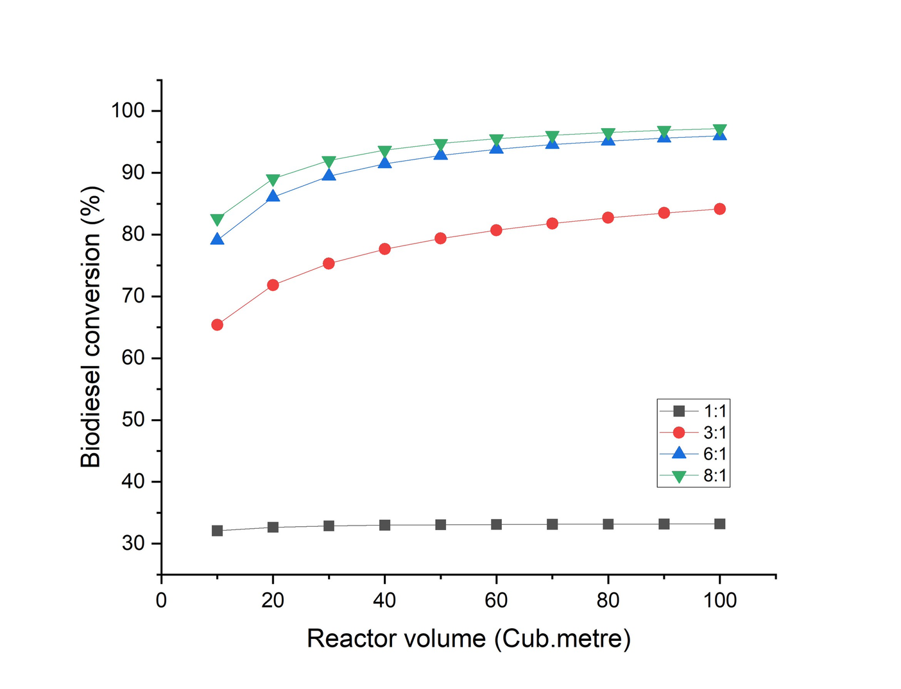
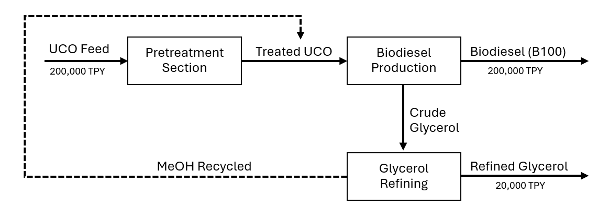
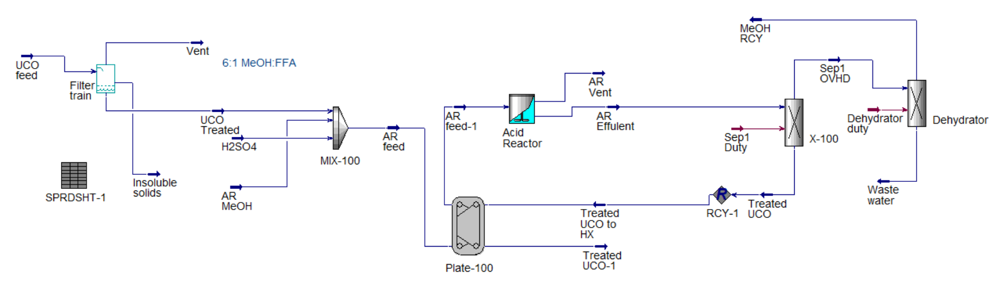
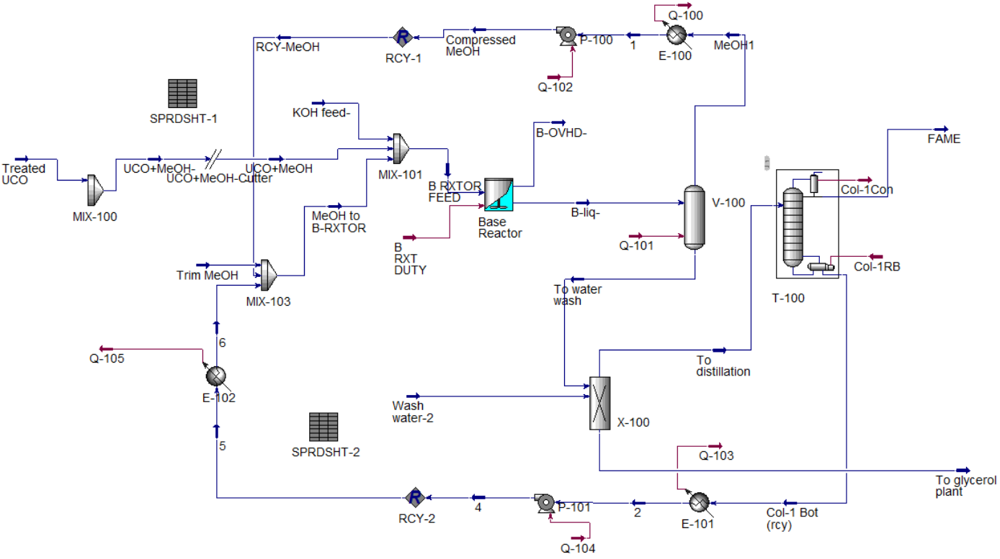
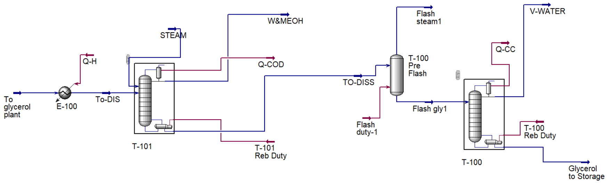

B.Eng. Capstone Design · Group of five · 2026
FAME biodiesel from used cooking oil
A complete plant design, written up in a 127-page report, that turns used cooking oil into B100 biodiesel and refined glycerol. I owned the process design and optimization.
- Used cooking oil in
- 219,800 t/yr
- B100 biodiesel out
- 209,100 t/yr
- Refined glycerol out
- 20,640 t/yr
- Fixed capital
- $57.9M
Figures from the final design report. Plant sited in Rayong, on the Eastern Seaboard.
My part
- Modelled the base-catalysed transesterification reactor and the separation train in Aspen HYSYS.
- Optimized the reactor for biodiesel yield. At a 6:1 methanol-to-oil ratio, conversion reaches about 96% at 100 m³. Going to 8:1 adds only about one more point, and every extra mole of methanol has to be recovered again downstream.
- Proposed turning the oily solids filtered out of the feed (about 2,200 t/yr) into biogas by anaerobic digestion, and did the material balance: roughly 3,800 m³ of biogas a day, about 61 GJ of energy, from waste that would otherwise go to disposal.

How the plant works

Section 1
Pretreatment
Used cooking oil is filtered, then its free fatty acids are converted to FAME with methanol and a sulfuric-acid catalyst (6:1 methanol to FFA). Water is removed and methanol recycled, because free acids and water would otherwise turn into soap in the next reactor.

Section 2 · my focus
Biodiesel production
The treated oil reacts with methanol over a KOH catalyst to make biodiesel and glycerol. Excess methanol is flashed off and recycled, the crude biodiesel is water-washed, and a distillation column delivers the FAME product.

Section 3
Glycerol refining
The glycerol side-stream is distilled to strip water and methanol, flashed, then distilled again to give refined glycerol, a second product that adds about $10M a year in sales.

The economics hinge on the oil price
Used cooking oil is by far the biggest cost, and the gap between what it costs and what B100 sells for is narrow. At the prices in our brief (oil at $925/t, B100 at $1,026/t), the plant makes a gross profit of $13.0M a year, but its return only matches the 7% the investment needs. So on today's prices we judged it not yet attractive, and small price moves change that completely.
Internal rate of return (IRR). The dashed line is the 7% required return.
Beyond the flowsheet
- Heat integration: a heat-exchanger network designed from the Aspen Energy Analyzer composite curves.
- Waste: wastewater goes to certified treatment, filter solids to the biogas plant above, and the salt from catalyst neutralization is sold as fertilizer.
- Safety: HAZOP of the reactor, covering temperature, pressure, venting and liquid level.
- Equipment design: sizing of every major unit, shell and head thicknesses to ASME Section VIII Division 1, line sizing and exchanger datasheets.
- Site: location study, P&IDs, and a plant layout with safety zoning.